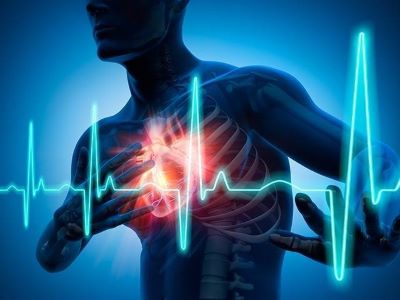
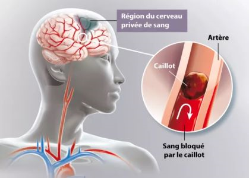

Maladies Cardiovasculaires

Les maladies cardiovaculaires regroupent un ensemble de troubles qui
affectent le coeur et les vaisseaux sanguins. Elles sont l'une des principales causes de décès dans le monde. Selon l'OMS, les
maladies cardiovaculaires sont responsables de près de 18 millions de décès chaque année, soit environ 32% de l'ensemble des décès dans le monde.
Parmis ces décès environ 85% sont dus à des crises cardiaques et des accidents vasculaires célébraux (AVC). Le taux de maladies
lié aux maladies cardiovaculaires peut varier considérablement selon les régions, les groupes d'âge et les facteurs socio-économiques.
1.Types des maladies cardiovasculaires
Maladie coronarienne (coronaropathie) : c'est la plus courante
de maladie cardiovasculaire. Elle est causée par le rétrécissement des artères coronaires, qui fournissent
du sang au muscle cardiaque. Ce rétrécissement est souvent dû à l'accumulation de dépôts de cholestérol sur
les parois des artères, processus appelé athérosclérose. Si ces artères deviennent trop étroites, cela peut
entraîner des douleurs thoraciques (angine de poitrine) ou même une crise cardiaque.
Hypertension
artérielle (ou hypertension) : c'est une pression anormale élevée du sang contre les parois des artères. Non
traitée l'hypertension peut endommager le coeur, les vaisseaux sanguins, les reins et d'autres organes,
augmentant le risque d'AVC et de crise cardiaque.
Accident vasculaire célébral (AVC) : un AVC survient
lorsque l'approvisionnement en sang du cerveau est interrompu, souvent en raison d'un caillot sanguin
(AVC ischémique) ou de la rupture d'un vaisseau sanguin (AVC hémorragique). Cela peut entraîner des lésions
célébrales graves et des handicaps à long terme voire la mort.
Insuffisance cardiaque : c'est une condition
où le coeur n'est plus capable de pomper suffisamment de sang pour répondre aux bésions du corps.
L'insuffisance cardiaque peut être causée par des maladies coronariennes, l'hypertension ou d'autres problèmes
cardiaques.
Arythmies : ce sont des troubles du rythme cardiaque, où le coeur bat de manière irrégulière,
trop rapide ou trop lent. Certains arythmies peuvent être bénignes, tandis que d'autres peuvent être graves
et nécessiter un traitement.
Maladies des valvules cardiaques : ces maladies affectent les valves du coeur,
qui assurent la circulation du sang dans la bonne direction. Les valves peuvent être rétrécies (sténose)
ou fuir (insuffisance valvulaire), ce qui nuit au flux sanguin normal.
2.Causes et facteurs de risque
Les maladies cardiovasculaires sont souvent causées par une combinaison de facteurs,
dont certains peuvent être modifiés, tandis que d'autres ne peuvent pas l'être. Parmis les principaux facteurs de risque,
on trouve :
- Tabagisme : le tabac endommage les parois des vaisseaux sanguins, favorisant l'athérosclérose.
- Hypercholestérolémien : un taux élevé de cholestérol dans le sang peut entraîner la formation de plaque dans les artères.
- Hypertension artérielle : comme mentionné, elle peut endommager les artères et le coeur.
- Diabète : le diabète augmente le risque de développer les maladies cardiovasculaires.
- Obésité : l'excès de poids exerce une pression supplémentaire sur le coeur et peut contribuer à l'hypertension, au diabète
et à l'hypercholestérolémie.
- Mode de vie sédentaire : le manque d'exercice est lié à plusieurs facteurs de risque, comme l'obésité et
l'hypertension.
- Facteurs génétiques : un historique familial de maladies cardiovasculaires peut augmenter le risque.
3.Symptômes

Les symptômes des maladies cardiovasculaires varient en fonction du type de maladie, mais peuvent inclure :
- douleurs ou inconfort dans la poitrine (angine de poitrine) ;
- essoufflement ;
- fatigue ou faiblesse générale ;
- battements cardiaques irréguliers ou palpitations ;
- gonflement des jambes, chevilles ou pieds (en cas d'insuffisance cardiaque) ;
- vertiges ou évanouissements.
4.Prévention et traitement
La prévention des maladies cardiovasculaires repose principalement sur des changements de mode
de vie et, dans certains cas sur des médicaments. Voici quelques mesures préventives :
- Arrêt du tabac : c'est l'une des mesures les plus importantes pour réduire le risque.
- Adopter une alimentation saine : manger des fruits, des légumes, des grains entiers et limiter les graisses saturées
et le sel.
- Exercice physique régulier : une activité physique modérée, comme la marche rapide, est bénéfique pour le coeur.
- Maintien d'un poids sain : cela aide à prévenir l'hypertension, le diabète et l'hypercholestérolémie.
- Contrôle de la pression artérielle et du cholestérol : des examens réguliers et des médicaments, si nécessaires,
peuvent aider à gérer ces facteurs de risque.
En cas de maladies cardiovasculaires avérées, le traitement dépendra du type de maladie et de sa gravité. Cela peut inclure :
- Médicaments : pour contrôler l'hypertension, réduire le cholestérol, prévenir les caillots sanguins ou gérer les symptômes.
- Interventions chirurgicales : comme l'angioplastie pour déboucher les artères coronaires, le pontage coronarien, la pose
de stents.
- Rééducation cardiaque : un programme supervisé de réadaptation physique et éducative pour aider les personnes à
se remettre d'une crise cardiaque, d'une chirurgie cardiaque, ou d'autres affections cardiaques.
En résumé, les maladies cardiovasculaires peuvent avoir des conséquences graves voire mortelles. Cependant de nombreuses mesures
de prévention peuvent être prises pour réduire les risques, et les traitements disponibles permettent souvent de bien gérer ces
maladies et d'améliorer la qualité de vie des patients.